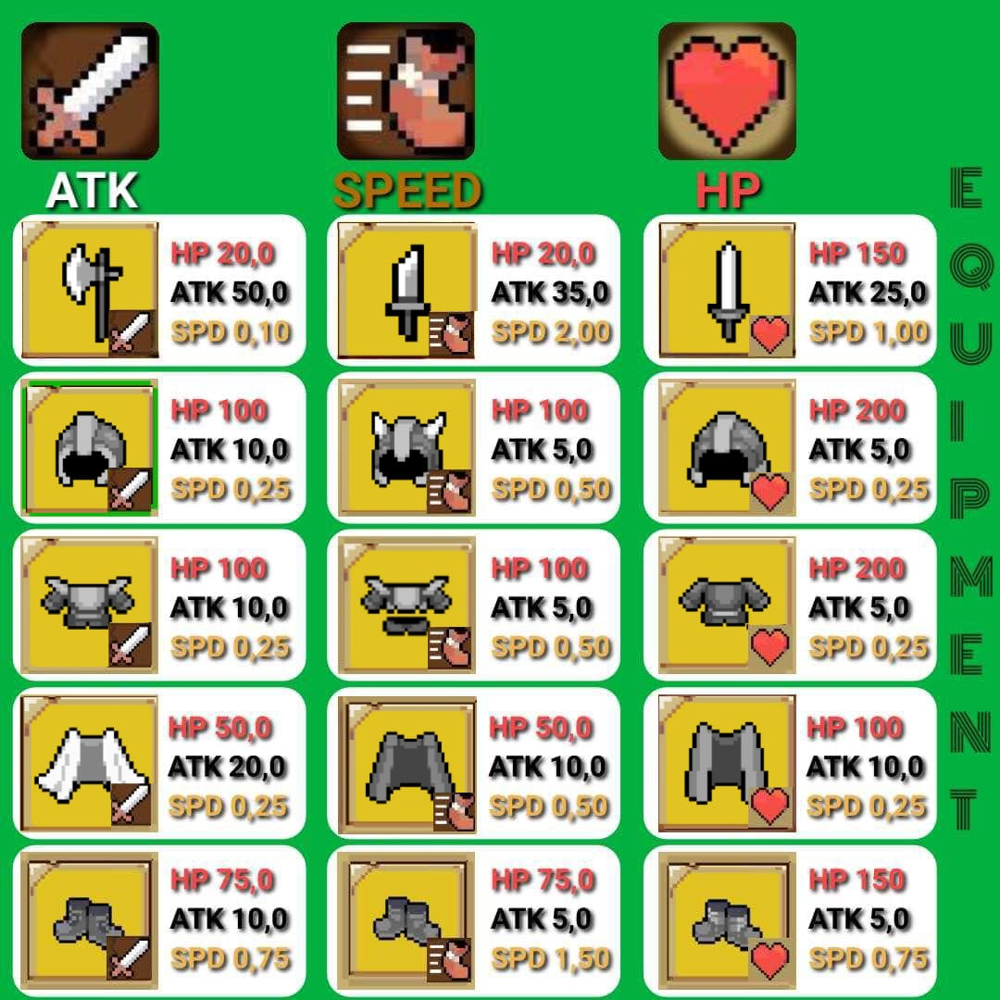
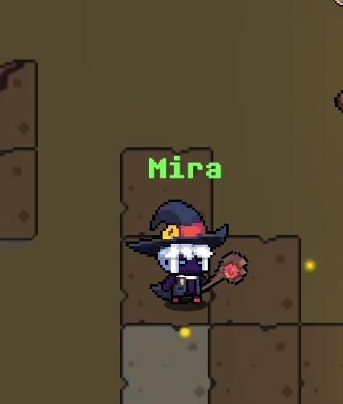
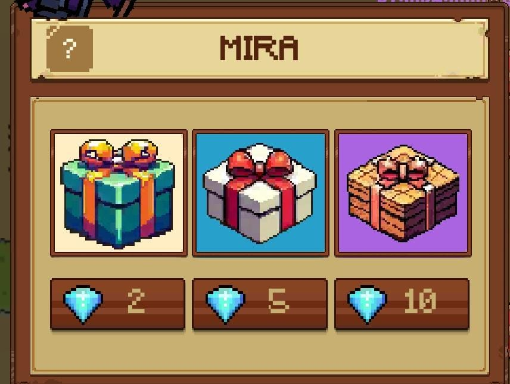

ITEMS
GUIA DE ITENS:
A imagem abaixo mostra todos os itens lendários existentes(exceto vila viking e evento)
e seus atributos máximos...

Como consigo itens lendários?
Os itens lendários são dropados do monstro Astromophy com taxa de 100%.
Mas existe uma estratégia mais eficiente de conseguir estes itens, ela consiste em comprar caixas de 5 diamantes na npc MIRA.

